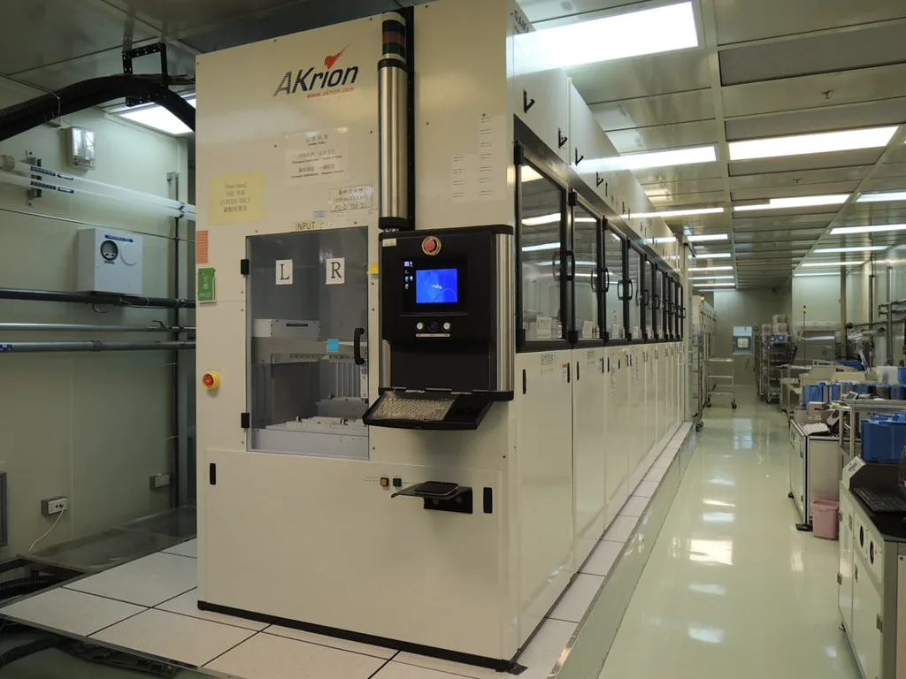
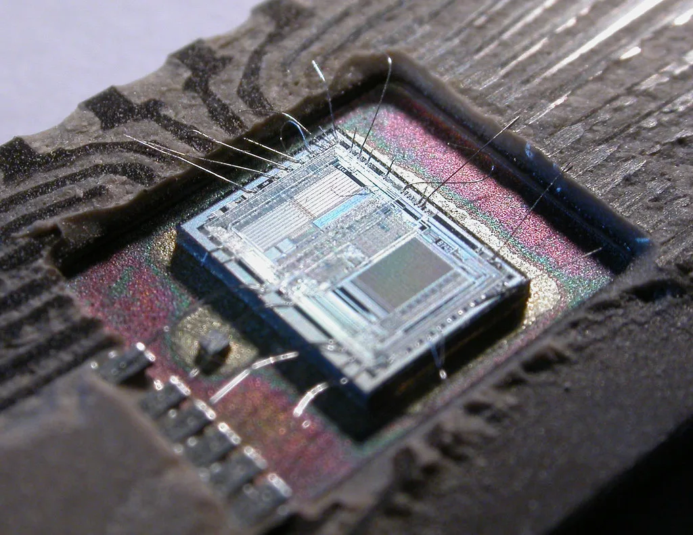

삼성전자, 3분기 영업이익 사상 첫 100조원 돌파 전망
삼성전자가 올해 3분기 분기 기준으로는 창사 이래 처음으로 영업이익 100조원 고지를 넘어설 것이라는 전망이 잇따르고 있다. 최근 증권가 컨센서스에 따르면 3분기 매출은 200조원대 초반, 영업이익은 107조원 안팎으로 집계됐으며, 일부 증권사는 118조원을 넘는 수치를 제시하기도 했다. 반도체 업황 회복 국면에서 나온 전망치이긴 하지만, 단일 분기 영업이익이 100조원을 넘는다는 것 자체가 국내 기업 역사에서 유례를 찾기 힘든 규모라는 점에서 시장의 관심이 집중되고 있다. 불과 1~2년 전만 해도 반도체 업황 침체로 적자를 걱정하던 시기였다는 점을 돌아보면, 업황 반전의 폭이 그만큼 가파르다는 평가가 나온다.
실적을 견인하는 핵심 축은 단연 디바이스솔루션(DS) 부문, 그중에서도 메모리사업부다. DDR5 등 범용 D램과 기업용 솔리드스테이트드라이브(SSD)를 비롯한 낸드 제품 판매가 견조한 흐름을 이어갔고, 고대역폭메모리(HBM) 판매량도 큰 폭으로 늘어난 것으로 파악된다. 인공지능(AI) 서버 투자 경쟁이 이어지면서 메모리 수요가 공급을 웃도는 상황이 지속됐고, 이 과정에서 가격 협상력이 제조사 쪽으로 확연히 기울었다는 게 업계의 공통된 진단이다. 특히 하이퍼스케일러들이 데이터센터 증설을 위해 장기공급계약 물량을 먼저 확보하려는 움직임을 보이면서, 메모리 제조사 입장에서는 안정적인 수요처를 미리 확보하는 효과까지 누리고 있는 것으로 전해진다.

수익성 지표에서도 이런 흐름이 뚜렷하게 나타난다. 증권가에서는 3분기 DS부문 영업이익률이 72~75% 수준에 이를 것으로 추정하고 있으며, 특히 D램 제품군의 이익률은 80%를 웃돌 것이라는 관측도 나온다. 통상 반도체 업황이 좋을 때도 이 정도 수준의 이익률을 기록하기는 쉽지 않다는 점에서, 이번 슈퍼사이클의 강도가 과거 호황기와는 결이 다르다는 평가가 뒤따른다.
상반기 영업이익 146조원가량에 3분기 전망치를 더하면 올해 누적 영업이익은 이미 250조원을 훌쩍 넘어선다. 여기에 4분기 전망까지 더해지면 연간 실적 규모는 더욱 커질 것으로 보인다. 일부 증권사는 4분기 영업이익이 3분기보다 많은 120조원 안팎에 이르러, 연간 누적으로는 370조원 수준에 도달할 수 있다는 전망까지 내놓고 있다.

다만 이런 실적 전망이 어디까지나 컨센서스와 일부 증권사 추정치에 근거한 것인 만큼, 실제 확정 실적은 다음 달 공식 발표를 통해 확인해야 한다는 신중론도 있다. 메모리 가격의 변동성이 여전히 크고, HBM을 둘러싼 경쟁사와의 점유율 다툼도 계속되고 있어 4분기 이후 흐름을 낙관하기는 이르다는 지적이다. 일각에서는 메모리 슈퍼사이클이 언제까지고 이어질 수는 없는 만큼, 가격 조정 국면이 찾아올 경우 실적 눈높이도 그만큼 낮아질 수 있다는 경계론도 함께 나온다.
그럼에도 시장에서는 이번 실적 전망을 계기로 국내 반도체 기업들의 기업가치를 재평가하려는 움직임이 이어지고 있다. 증권가 일각에서는 목표주가를 잇달아 상향 조정하는 리포트를 내놓고 있으며, 이번 호황이 특정 분기에 그치지 않고 내년 이후까지 이어질 수 있다는 낙관적 시각도 힘을 얻는 분위기다. AI 인프라 투자가 당분간 지속될 것이라는 전망이 우세한 가운데, 메모리 공급 부족 국면이 얼마나 오래 이어질지가 향후 실적의 관건이 될 것으로 보인다.
업계에서는 이번 100조원대 영업이익 전망을 계기로 삼성전자뿐 아니라 SK하이닉스 등 국내 메모리 업체 전반의 실적 눈높이도 함께 높아질 것으로 내다보고 있다. 다만 반도체 업황 특성상 수요와 공급의 균형이 급격히 뒤바뀔 수 있는 만큼, 기업들도 설비 투자 속도 조절과 제품 포트폴리오 다변화를 병행하며 리스크 관리에 나서는 모습이다.